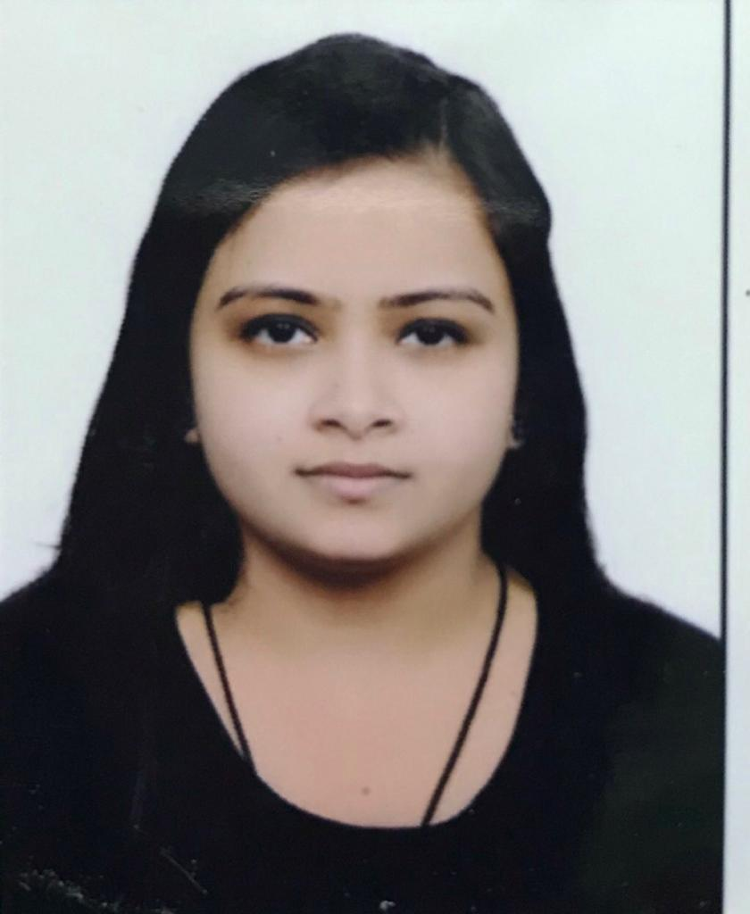

Reetika Gupta

Objective:
To obtain a position in a people-oriented organization where I can maximize my experience in a challenging environment to achieve the corporate goals.
Technical Skills:
•CCNA
• CCNP
•PYTHON:Data Types,Functions,modules,loops.
• HTML: Tags,Elements,Attributes,Headings,Lists,Classes,Forms,image,Styles
• Data Structure :Array,Linked List,Circular Linked list,Doubly Linked list, Stack Queue.
Work Experience :
June 2022-October 2023
Organization Name: Tech Mahindra Limited (Noida)
Designation : Sr. Associate - Technical Support
Job Summary:
• Netgear product based International Voice Process
• Inbound call process
• Have to handle customer techincal queries over the call
• Queries related to Netegar products like Router,Modem and Adapter
• Resolving the issues and concerns of US customers as per the process over calls.
• Resolve customer issues in timely manner.
• Identify, investigate and resolve recurring customer support issues.
July 2020-Feb 2021
Organization Name:CampK12 (Work from Home,Delhi)
Designation :Coding Instructor
Job Summary:
• Teaching Virtual Reality (Making games) and Artificial Intelligence using javaScript.
• Make children understand the importance of programming .
• Taking PTM at the end of each module(AI or VR).
• Used different platforms like AI Playground,hatchXR ,P5.js for coding.
Aug 2019 – December 2019
College Name : NDIIT (Kalkaji, New Delhi)
Designation : Assistant Professor
Job Summary :
• Teaching DBMS,Operating System & Computer Networking .
• Prepare lesson plans and methods of assessment.
• Taking Viva’s for students during Internal Examinations.
• Preparation of Question papers for Internals during semesters.
• Monitoring Attendance.
Feb 2018- July 2019
College Name : Aditya Institute of Technology (Chattarpur,New Delhi)
Designation : Lecturer
Job Summary :
• Teaching C, Java, Data Structure & Computer Organization.
• Provide them practical knowledge.
• Organize lab sessions for C & Java .
• Guiding students in their projects ( making Window applications,database connectivity).
• Manage the teaching plans for student.
• Taking Viva of students during Internal Examinations.
• Preparation of Question papers for Internals during semesters.
• Regular meetings with parents.
Projects:
• E-LPG Service in 2nd year of B.Tech
• Front end -ASP.NET .
• Back end- SQL server .
• Framework-Microsoft Visual Studio .NET .
• This application was used to book LPG services online.
Library management in 3rd year of B.Tech
• Front end - Java .
• Back end- SQL Server .
• Framework-Eclipse
• This application was used to make library work through system.
Online Examination in Final year of B.tech
• Front end- Java
• Back end- SQL Server
• Framework-Eclipse
• This application was used to make examinations online.
• Pairwise Generation of Test Cases in presence of constraints in Final year of M.Tech
• Front end-Java
• Framework-Netbeans
• Used for testing the web applications.
Academic Background:
G.G.S.S. School Saraswati Vihar , New Delhi
• XIIth Standard (CBSE Board)
- Non-Medical with aggregate of 72% - Passed out in March 2010
• Xth Standard (CBSE Board)
- Aggregate of 82% - Passed out in March 2008
PDM College of Engineering for Women
Affiliated by MDU University
Computer Science Engineering
- B.Tech with aggregate of 70% -Passed Out in May 2014
CENTER FOR DEVELOPMENT OF ADVANCE STUDIES (CDAC),Noida
Affiliated by Guru Gobind Singh University (IP University) Information & Technology
-M.Tech with aggregate of 85.2%-Passed Out in May 2017
Achievements and Co-Curricular activities:
• Two times NTA NET qualified july 2018 and june 2019.
• Publication: “PairTester - Pairwise Generation of Test Cases in presence of constraints” in National Conference on Information Technology, Electronics and Management (NCITEM- 2017) held on July 20-21 2017 published by IASIR Journals.
Deceleration: